meteor ☄️
Cryptographically secure steganography for realistic distributions.
A project by Gabe Kaptchuk, Tushar Jois, Matthew Green, and Avi Rubin.
Read on to find out about the workings of our system, but there’s a TL;DR at the bottom!
This work appears in the proceedings of the 2021 ACM SIGSAC Conference on Computer and Communications Security (CCS '21). You can also read a preprint of our work on ePrint.
We have a demo of our work available as a Google Colaboratory notebook. This will allow you to try out our Meteor codebase using GPU acceleration. Make sure to read the directions in the notebook to get started!
The widespread use of cryptography has been a boon to the privacy of users around the world. Systems like Signal and WhatsApp use strong, end-to-end encryption with hardware-backed storage capable of resisting attack even from nation-state actors. However, encrypted communication is distinct; it’s clear when encrypted communication is taking place. A system like WhatsApp is easily blocked by censors looking to stifle communication, and censors have experimented with slowing down connections to block services.
Evading censors
Network censorship is becoming increasingly nefarious. China’s Great Firewall, for example, not only prevents access to content deemed subversive, but also actively denies access to censorship circumvention tools such as Tor. Our current suite of tools to evade censors uses steganography, a technique by which a secret message (the stegotext) is hidden in a different one (the covertext). The point of steganography is that the censor doesn’t realize we’re hiding stegotext in covertext.
An example
Take the following image:
We’ve taken a sample image and used an online steganographic encoder to add a message to the
pixels underlying it. We can send this in a messaging app to another individual, and then they can use the
same process to decode the message. When piped back into a steganographic decoder, we see that this image
encodes the message “Attack@Dawn”.
For comparison, here is the original image, without any steganography applied:

The differences between these two images are miniscule and imperceptible to the human eye. However, if we compute the pixel difference between the two images, we can distinctly make out that pixels in the top left are changed.
Ideally, the censor shouldn’t be able to figure out if the image you are sending has a hidden message. They could consider blocking all images outright because of the potential for hidden messages, but this is impractical. It could cause widespread outrage – or hurt business interests. Thus, the censor will allow pictures, and thereby this hidden communication as well.
In the real world
This example of image steganography is fun and illustrative, but isn’t secure. In formal definitions of steganography, we assume that the adversary is attempting to figure out if steganography is being used at all. This example fails that test, since an adversary can detect the presence of steganography with a simple pixel difference, as we’ve shown above.
Applications like Tor use more robust techniques, such as ScrambleSuit and obfs4, to hide its traffic. These techniques take Tor traffic and hide it in a random (or random-looking) stream of data. In other words, an adversary cannot distinguish between stegotext and normal covertext, maintaining security.
There’s no guarantee though that a random-looking stream of data will exist, though. A particularly audacious censor could block all communication that wasn’t explicitly readable. If a communication does not look like structured text and images, for example, the censor could just block it. While studies of the Great Firewall are incomplete, but there is at least anecdotal evidence of it even blocking mundane TLS 1.3 connections. Censors could start expecting plaintext communication overnight, rendering all of our current practical techniques moot.
Formal guarantees
To begin to solve this problem, we can turn to provable techniques known as universal steganography. These techniques rely on a sampler functionality that outputs a token that could be a member of a covertext distribution. For example, if we wanted to use English text as our covertext, tokens would be a letter or a word. Universal steganography loosely works as follows:
- Take your message
mand encrypt it with a pseudorandom cipher to getx - For each bit
x_iof the encrypted messagex:- Sample a random token
c_ifrom the covertext distribution - Apply an unbiased hash function
hto the sampled token.- If
h(c_i) = x_i, outputc_iand proceed to the nextx_i - Else, resample
c_iand redo the hash comparison
- If
- Sample a random token
The recipient on the other side can do the following to recover the message:
- For each token
c_iin the stegotext:- Compute
h(c_i) = x_i
- Compute
- Collect the bits
x_iinto the encrypted messagex - Decrypt
xto recover the original functionm
Notably, the censor in between cannot tell if a message has a stegotext inside of it. The bits of
x_i look random, due to pseudorandomness of the cipher.
Since h introduces no bias, the tokens c_i selected look the same as those
normally in the covertext distribution.
Barriers to steganography
This seems like a perfect solution for our problem: hiding a message inside of another one, with a cryptographic guarantee attached. The key to this setup, however, is knowing the covertext distribution. In reality, the distribution of a language such as English is fundamentally unknowable – language evolves and cannot be perfectly captured as a set of probabilities.
To get around this limitation, we can approximate the distribution of the English language. We can’t claim to know all about the language, but we can build generative models that are trained on vast corpora of English language text and in turn can generate new text. One of the state of the art techniques in generative modeling is the transformer, a type of neural network. Examples include OpenAI’s GPT-2 and GPT-3 architectures, which generate fairly realistic text. Here’s an example of some text that GPT-2 can generate, when fed the first paragraph of this blog post:
But as the advances in digital communication and privacy continue, and our needs expand, it’s becoming increasingly clear that native digital tools are not enough to protect our privacy online. The anonymity of “112
The above is an output that is based on an estimate of the English language, but it’s pretty good – and these types of models are getting even better.
GPT-2 seems like a good fit to be our approximate sampler for steganography. We also have to be careful about bias, though. Universal steganography requires the use of unbiased hash functions. However, in practice, we have to use cryptographic hash functions, which can potentially introduce bias when sampler distributions have low entropy. GPT-2 is not immune to this; the below instantaneous entropy chart shows that GPT-2 goes into periods of low entropy as it samples different tokens.
This behavior is not inherent to the GPT-2 alone. Consider the following statement:
The largest carnivore of the Cretaceous period was the Tyrannosaurus
The most appropriate token here is “Rex”, and there isn’t a clear alternative – a low entropy situation. Regardless of sampler, we encounter situations like these in natural language. Thus, the entropy assumptions of universal steganography are also impractical. Any solution that attempts to utilize a natural language distribution (or its approximation) needs to handle these questions.
Meteor
This brings us to our work, Meteor. We use the GPT-2 as a sampler, approximating the English language. At the same time, we ensure that, as we sample tokens, we do not introduce bias.
Encoding and decoding
Suppose the following setup, in which a sender and a receiver share a key and a generative model. For a given context (initial state), the generative model will output a prediction of the next word, based on probabilities in a token distribution.

When the sender wishes to encode a message of size n bits, they first start by generating a
random mask (specifically, from a keyed pseudorandom
generator), or a (pseudo-)random sequence of bits, of size n and XORing it to the plaintext
message. The sender then takes this “masked” message and uses it to sample a token from the distribution.
For now, we’ll skip over how the token is sampled, but once we have it, we append it to the
stegotext to send. Each token encodes some number of bits b. We repeat this process for the
next n - b bits, up until all n bits are encoded by Meteor.

Decoding proceeds similarly. Upon receiving the stegotext, the receiver starts sampling from the model. The receiver compares the sampled tokens to the actual token from the stegotext. This allows the receiver to extract the encoded bits, and repeats sampling and comparing tokens to extract all of the bits from the stegotext.

Meteor sampling
We’ve seen that Meteor can effectively utilize the GPT-2. Now let’s go back to how Meteor samples a token for use in stegotext. This section is a bit more technical than the rest, but the intuition follows from the previous sections.
We know that our generative model outputs a set of tokens and their associated probabilities. We can order these into a cumulative probability distribution, as shown below.
We map the space of masked messages (i.e., bit strings) to this cumulative distribution. When we want to sample, we utilize our mapped message to index into the distribution. Based on the cumulative probability, we select a new token.
Because we map the entire encrypted message space over the distribution, different messages will select different tokens. However, there may be some overlap because the domain (all possible messages) is much larger than the range (the possible tokens).
The number of bits encoded depends on the organization of the distribution. For example, suppose for a 5 bit
message, a token was is output for bit strings between 01001 and
01110. This means that any time the token was is output, the string is prefixed by
01 – encoding two bits of information into the stegotext.
While we expect to encode bits at each run of the algorithm, sometimes we cannot. This might be because our
message bits land in a region of the distribution that do not yield any information about the underlying
encoded message. Using our example, if the token did is valid for bit strings between
01111 and 10011, we do not learn anything about the message from the token – they
do not share a prefix.
When we are in situations of low entropy, we simply continue, and hopefully at the next sampling of the algorithm we have enough entropy to encode bits via the prefix method described above. This allows us to handle cases with low entropy without introducing bias, even if we cannot encode a bit every time we pull a token from the generative model. Rejection sampling and friends may allow us to encode bits at every step of the algorithm, but introduce too much bias to be secure.
The proof of security of Meteor boils down to the use of a pseudorandom generator to mask the message bits, making the actual mask used for Meteor sampling indistinguishable from the random number used in standard GPT-2 sampling. More details can be found in our paper.
An example
We use our demo for
the following example. Because of machine
factors, we cannot guarantee reproducibility, though. Using the first paragraph of this post as context and
the message “hello, world!”, Meteor outputs the following stegotext:
But with 24/7 surveillance, logs, and surveillance cameras putting netizens to shame, humans are becoming increasingly reliant on alternative means of social connected
Clearly, the stegotext is longer than the original message. However, it’s reasonably acceptable, given the context, and isn’t so long that the system is unusable. Meteor uses a number of techniques to make this encoding efficient. We managed to get Meteor running on a desktop with a dedicated GPU, a laptop with no GPU, and an iPhone. Please read our paper for more details.
TL;DR
Meteor, in four tweets:
- Steganography – hiding the presence of a message, in addition to its content – is necessary with censorship efforts on the rise around the globe.
- Classical steganography has too many assumptions to be perfectly deployed in practice for natural language distributions, such as English.
- Our work, Meteor, is a symmetric-key steganography algorithm that encode & decodes from generative approximations of natural language.
- Meteor builds upon the best ideas from classical steganography to deploy a system that is both practical and provably-secure.
If you want to find out more about Meteor, you can take a look at our academic paper. Our paper also includes a discussion of other forms of steganography (like public-key) and a comparison of Meteor to prior work in the NLP field. We also have a demo version of Meteor on Google Colab if you’d like to try it out. Tweet at us if you’re interested in our project and want to talk about it some more!